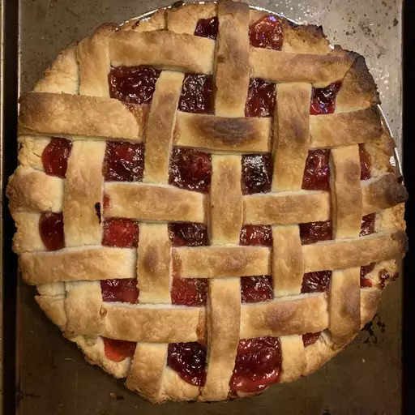

Buttery Cranberry Pie
Great for the holidays- once you serve this pie, everyone wants seconds! Try a scoop of vanilla ice cream on top while still warm. MMMM!

| Prep Time: |
Cook Time: |
Total Time: |
Serving: |
| 20 mins |
40 mins |
1 hrs |
8 |
Ingredients
- 1 recipe pastry for a 9 inch double crust pie
- 1 and half cups white sugar
- One-third cup all-purpose flour
- One-fourth teaspoon salt
- 1 package fresh cranberries
- One-fourth cup lemon juice
- 1 dash ground cinnamon
- 2 teaspoons butter
Steps
-
Preheat Oven:
Preheat the oven to 425 degrees F (220 degrees C).
-
Create Filling:
In a saucepan, combine sugar, flour, salt and water. Bring to a boil and cook, stirring constantly until thick and smooth. Add berries, lemon juice and cinnamon. Cook 5 minutes until mixture is thick and berries pop. Remove from heat and stir in butter.
-
Fill pie crust:
Roll one ball of dough out to fit a 9 inch pie plate. Place bottom crust in pie plate. Spoon in filling. Roll out top crust and cut into strips for lattice. Place lattice strips on top and seal edges.
-
Bake:
Bake in the preheated oven for 40 minutes, or until crust is golden brown.